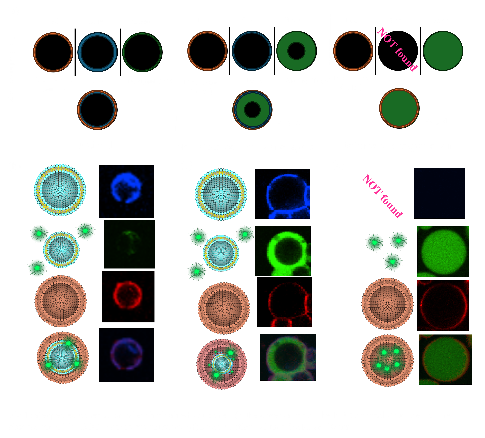
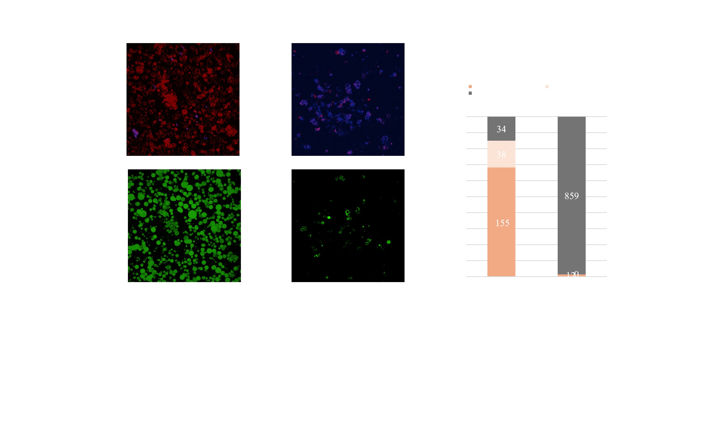

Appendix
BDB
〇Preparation and Evaluation of BDB Structure
One of the objectives of our project is to create a triple-layered structure within a Giant Unilamellar Vesicle (GUV) by forming a DNA hydrogel between two lipid bilayers. However, there are few precedents for constructing triple-layered structures, and methods to verify their formation have not yet been established. Additionally, unintended structures may arise concurrently during the creation of these triple-layered assemblies. To overcome this challenge, we initially developed methods to precisely identify successful structures and devised a strategy for selectively recovering them.
In this section, we introduce the BDB structure, which serves as a preliminary model in this project. The BDB structure consists of two lipid bilayers with a DNA strand between them. Using this structure, we outline a fluorescence-based method to distinguish optimal triple-layer structures from unsuccessful formations, along with key principles for identifying and excluding failed structures, with corresponding validation. This information is expected to contribute significantly to optimizing the construction and evaluation of our target product, the BGB structure.
〇Preparation and Visualization of Failures in BDB Structures
When constructing triple-layered structures, two primary types of failure structures may arise. Visualizing these failures is essential for a comprehensive understanding of the triple-layer structure. In this study, we used AMCA-DNA and Rhod-PE fluorescent molecules to indicate the positions of the liposome-DNA complex and the outer membrane, respectively. Additionally, FAM molecules were added to the DNA layer to visualize the inter-membrane distance(Fig.1.a).
In the optimal structure, fluorescence from AMCA-DNA and Rhod-PE overlaps, while FAM fluorescence is minimal or confined to the thickness of the AMCA-DNA fluorescence layer (Fig.1.b).
However, certain structures exhibit a thick layer of FAM fluorescence, indicating that the distance between the inner and outer membranes is excessive (Fig.1.c). These structures may result from smaller liposome-DNA complexes being encapsulated within larger droplets without membrane-DNA interaction support, possibly due to the centrifugation method.
Another type of failure occurs when the liposome-DNA complex is incompletely encapsulated, resulting in droplets composed only of the outer membrane (Fig.1.d). In this case, only the FAM molecules within the DNA layer are internalized, filling the entire interior with FAM fluorescence.
〇Purification of the BDB Structure
In applications where the formulation will be used as a product, contamination by unintended structures can be critical. This also applies to our project, which aims to develop a new drug delivery carrier system. Thus, it is desirable to eliminate as many unintended failures as possible. To this end, we developed a method for purifying the optimal triple-layer structures in BDB samples and evaluated the quality of the resulting products.
The developed technique leverages differential sugar densities across the three layers, ensuring that only optimal structures sediment during centrifugation. For example, during the formation of the liposome-DNA complex, the inner solution of the liposome contains 300 mM trehalose, while the external solution contains 300 mM glucose. When this solution, containing the complex, is centrifuged further, an additional solution with 240 mM glucose and 60 mM trehalose is added as the outermost layer. At this stage, the inner solution contains two sugar compositions: 300 mM trehalose within the liposome and 300 mM glucose in the DNA layer.
Arranged in descending order of density, the solutions are: liposome inner solution, outermost solution, and DNA layer. Consequently, only droplets containing the liposome in the innermost layer sediment during the second centrifugation step. Droplets without successful liposome encapsulation remain in a 300 mM glucose solution with the lowest density, preventing sedimentation. By switching from conventional to the newly developed centrifugation method based on this principle, we successfully increased the proportion of optimal BDB structures from 1.38% to 68.3% (Fig.2.a). This results strongly supported the efficiency of the purification method.
Materials and Methods
〇BD and BDB Making
- Forming the BD Structure
To form the BD structure, 1 µM of AMCA-DNA was added to the liposome solution. Surplus DNA strands were removed to avoid interference with the interaction between the BD structure and the membrane. To remove them, the BD solution was centrifuged at 15,000 g for 5 minutes, and 50% of the supernatant was exchanged.
- Confirming the Thickness of the DNA Layer with FAM Molecules
To confirm attachment of the inner and outer membrane layers by the DNA layer, FAM molecules were added to the DNA layer. If the structure is successfully formed, FAM will be observed within the fluorescence of the two membranes. If encapsulation of the BG structure fails, the inner solutions of the outer membrane will be filled with FAM fluorescence.